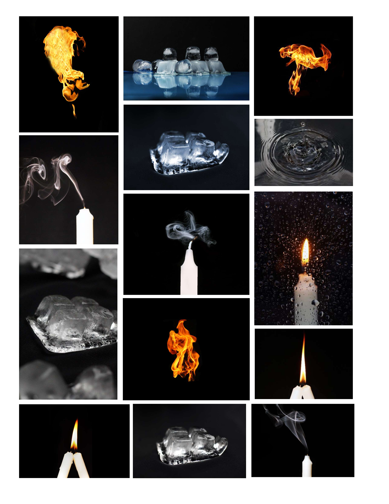

The GIF is a visual study that captures the elemental cycle of fire, ice, and smoke, transforming everyday natural phenomena. I want to show how easily a fire can burn something whereas the water stops it to create an incredible event – smoke. The composition features a series of images depicting flames, ice cubes, water droplets and smoke each captured specially to show the uniqueness of each event.
The fire is captured in mid-movement, with vibrant orange and yellow hues set against a stark black background. High shutter speed freezes the motion, highlighting the fire's dynamic and ephemeral quality. The use of aperture control to manipulate the focus in these images reflects Keith Arnatt’s influence. By isolating the main subjects and blurring the backgrounds, I have created a visual hierarchy that directs the viewer's attention to the intricate details of each element.
The ice cubes are depicted in various stages of solidity and melting. I captured how the ice is melting within the period to show the sequence. With the clarity of the ice and the subtle reflections on its surface, I aim to demonstrate careful attention to detail and lighting. The meticulous attention to detail in the photographs echoes Irving Penn's dedication to perfecting his images. The precise lighting, composition, and the way I have captured the inherent fragility of ice and the ethereal nature of smoke, demonstrate a commitment to showcasing the unique qualities of these elements. The images invite viewers to notice the small details they might usually overlook, much like Penn’s work.
The wisps of smoke are captured in soft curling patterns, creating a sense of fluidity and grace. Using software I made the smoke alive as it is shown at the end of the gif. Increasing the contrast and reducing the lighting created a special atmosphere that shows the uniqueness of the smoke that disappears very fast. The exploration of patience and atmosphere in photography is evident in the serene, almost meditative quality of the smoke and ice images. Josef Sudek’s influence can be seen in the composition and the emotional resonance of the photographs. The way I have captured the smoke as it curls and dissipates suggests a sense of fleeting beauty, much like Sudek’s contemplative window scenes.
By incorporating the techniques and influences of Keith Arnatt, Irving Penn, and Josef Sudek, I have created a body of work that elevates everyday elements into extraordinary subjects of artistic inquiry. The animated GIF format further enhances this exploration, providing a dynamic and immersive experience that underscores the unique beauty of each element and the continuous cycle of transformation. 